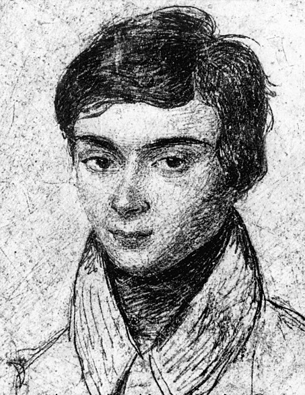

1811–1832
French
Algebra, group theory, field theory
Galois died in a duel at 20, having produced roughly 60 pages of mathematics. Those pages changed the course of algebra permanently. The night before his fatal duel on 30 May 1832, he wrote a letter to his friend Auguste Chevalier summarising his main results, famously scribbling in the margins: "I have not time."
His central insight was that the solvability of a polynomial equation by radicals — extracting roots step by step — is governed by the symmetry group of the equation's roots. A polynomial is solvable by radicals if and only if its Galois group (the group of permutations of the roots that preserve all algebraic relations among them) is a solvable group. Since $S_5$ is not solvable, the general quintic has no formula.
Galois's life was marked by frustration and tragedy. He was twice rejected by the École Polytechnique, and Cauchy lost one of his submitted manuscripts. A second memoir was sent to Fourier, who died before reading it. A third was finally sent to Poisson, who declared it incomprehensible. Only after Galois's death did Liouville recognise the manuscripts' value and publish them in 1846.
The word "group" (groupe) was his coinage. The Galois correspondence — the order-reversing bijection between subgroups and intermediate field extensions — is the template for duality theorems across mathematics, from topology to representation theory. Modern abstract algebra, from rings and modules to homological algebra, traces back to Galois's twenty pages of hastily written mathematics.
| Phase | Page | Referenced for |
|---|---|---|
| Phase 10 | Groups | Coined the word "group" (1832) |
| Phase 10 | Subgroups and Lagrange's Theorem | Group-theoretic structure built on Galois's work |
| Phase 10 | Galois Theory and Abel-Ruffini | Galois group, Galois correspondence, solvability criterion |
| Phase 10 | Galois Theory and Abel-Ruffini | Wrote main results the night before fatal duel (1832) |